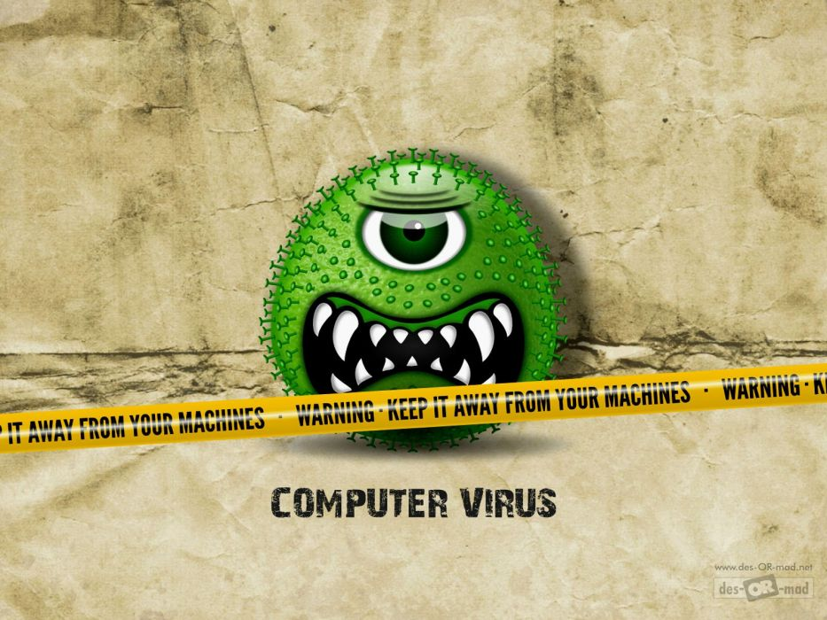

A computer virus, much like a flu virus, is designed to spread from host to host and has the ability to replicate itself. Similarly, in the same way that viruses cannot reproduce without a host cell, computer viruses cannot reproduce and spread without programming such as a file or document.
In more technical terms, a computer virus is a type of malicious code or program written to alter the way a computer operates and that is designed to spread from one computer to another. A virus operates by inserting or attaching itself to a legitimate program or document that supports macros in order to execute its code.
In the process a virus has the potential to cause unexpected or damaging effects, such as harming the system software by corrupting or destroying data.
How does a computer virus work ?
Once a virus has successfully attached to a program, file, or document, it will lie dormant until circumstances cause the computer or device to execute its code. In order for a virus to infect your computer, you have to run the infected program or open the infected file, which in turn causes the virus code to be executed.
This means that a virus can remain dormant on your computer, without showing major sings or symptoms. However, once the virus infects your computer, it can infect other computers on the same network. Stealing passwords or data, logging keystrokes, corrupting files, spamming your email contacts, displaying ads and pop ups on Desktop,
and even taking over your machine and using it’s computing power for mining purposes or performing some specific zombie kinds of attacks like DDOS (I will be talking about cyber attacks in a coming article) ,…etc.
While some viruses can be playful in intent and effect, others can have profound and damaging effects, such as erasing data or causing permanent damage to your hard disk.
How do Viruses get on my computer?
The most common way that a virus gets on your computer is by an email attachment. If you open the attachment, and your ‘anti-virus’ software if you have one doesn't detect it, then that is enough to infect your computer. Some people go so far as NOT opening attachments at all, but simply deleting the entire message as soon as it comes in. While this approach will greatly reduce your chances of becoming infected, it may offend those relatives of yours who have just sent you the latest pictures of little Johnny! You can also get viruses by downloading programmes from the internet. That great piece of freeware you spotted from an obscure site may not be so great after all. It could well be infecting your PC as the main programme is installing. And if you download files (movies, music or documents) from peer to peer networks (like torrent) then you could be downloading more than you bargained for!
If your PC is running any version of Windows, and it hasn't got all the latest patches and updates, then your computer will be attacked a few minutes after going on the internet! (Linux and Mac users can go into smug mode ).
How could I know that my machine is infected?
If you are infected by a virus, your computer may exhibit some well-known symptoms. Here's a few signs that you may be infected:
1. Your computer starts running more slowly than it usually does
2. Your computer keep crashing
3. Your computer keep crashing and then restarting
4. Programmes you normally work with suddenly start behaving oddly
5. You can't access your disk drives
6. Shortcuts everywhere
7. Popups and ads on your desktop (ads virus are not usualy harmful but they affect your machine performance)
Other symptoms to look out for are strange error messages, documents not printing correctly, and distorted menus and dialogue boxes. Try not to panic if your computer is exhibiting one or two items on the list.
The first thing to do is to scan your PC with your (up-to-date) anti virus software. If your anti-virus software fails to detect anything, then that doesn't mean you're NOT infected - it may just be poor anti-virus software wich is the case for all known anti-virus that are available for public use; but any way try to buy (not crack smug mode again ) Norton or Mcafee because even if they are not that good in detecting most of virus and malwares but they remain the best.
Could be sharing more technics to detect virus on your machine if your antivirus fails to but that needs a technical background and some prerequisites in operating systems architectures and computer networking